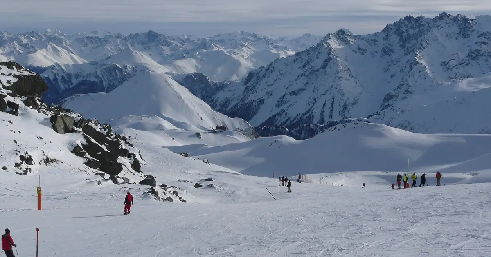
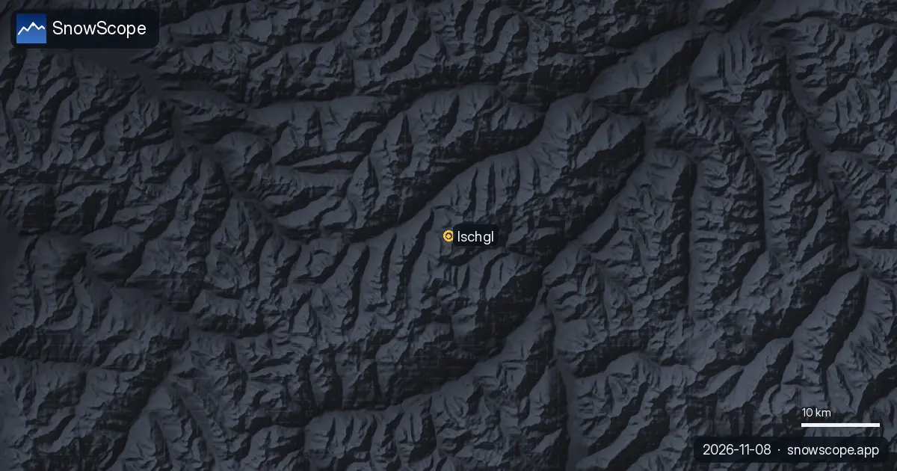
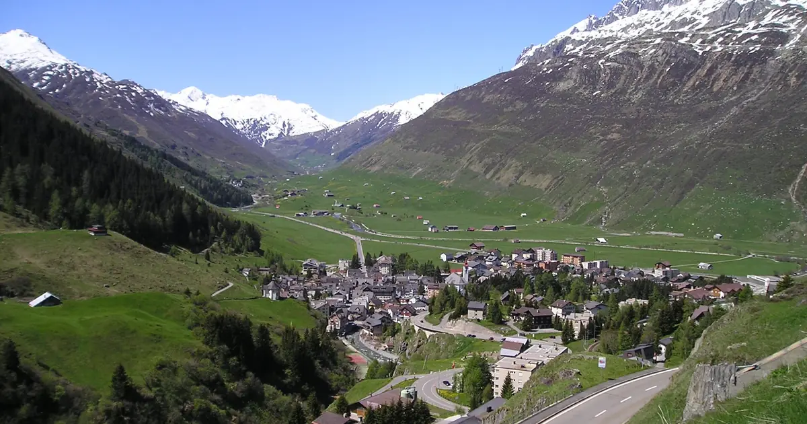

A week in Ischgl: a seven-day snow diary from the Paznaun to duty-free Samnaun
Ischgl has a loud reputation, but the mountain behind the après-ski is serious. Here is a week planned the way we would plan it, day by day, with the snow of 46 past winters from our model at three heights of the Silvretta Arena: 1,352 m, 2,110 m and 2,868 m.
See the live snow forecast for Silvretta Arena Ischgl/Samnaun in the SnowScope appSnow depth, powder alerts and the 3D map, free.
Day 1: go straight up
The village sits at 1,377 m in the Paznaun valley in Tyrol, and the valley floor is not where the snow is. In our record a typical winter peaks at about 74 cm at 1,352 m, against about 184 cm at 2,110 m. So on the first morning, ride up to Idalp, where many of the lifts converge. Its wide, easy pistes and the snow park are a calm place to find your legs before the bigger runs.

Day 2: the high ground
At the top of our record, 2,868 m, the snow of a typical winter builds to about 313 cm, and it is usually deepest in April, at about 245 cm on average over the month. That is the terrain for your first long day: the high runs keep their snow when the lower ones are worn, and the resort lists slopes up to 2,872 m.
Day 3: over the border to Samnaun
Ischgl's lifts connect with Samnaun, across the border in Switzerland, to form one of the largest ski areas in the Alps; the resort counts 239 km of slopes and snow parks. Samnaun has an unusual status. In the 19th century it could be reached by road only from Spiss in Austria, so it was left outside the Swiss customs area, and it stayed duty-free even after a road to Martina opened in 1905. On the Swiss side, ride the world's first double-decker cable car, built for 180 people, and keep an eye on the clock: the way home is on skis, before the last lifts.
Day 4: the grey day
Every week has one. In flat light, stay on pistes you already know and lower down, where there are more landmarks; poor visibility on wide, open slopes high up is harder than the snow itself. Use the evening to look at the forecast, because a fresh snowfall can change the whole plan for day 5.
Day 5: what 46 winters say
Over our 46 winters, mid-mountain at 2,110 m had at least 50 cm of snow for 18 weeks of the season in 9 winters out of 10, and for 24 weeks in half of them. That is a long and reliable window. It has thinned, though: the median peak there was about 205 cm in our first fifteen winters and about 179 cm in the last fifteen, and the days with snow on the ground fell from about 262 to 242. Last winter, 2025-26, was below normal, with a peak of about 147 cm.
Day 6: off the piste, carefully
Fresh snow on deep, high terrain is tempting, and this is where most of the risk lies. Read the official avalanche bulletin for Tyrol or Graubünden before you leave the marked runs, go with a guide if you do not know the slopes, and carry a transceiver, a shovel and a probe.
Day 7: when to come back
If you want to repeat the week, mid-mountain is usually at its best from February to April: about 137 cm in February, 149 cm in March and 131 cm in April in a typical winter. December is thinner, at about 61 cm, and January about 95 cm. The weak point late in the season is the bottom: at 1,352 m only about 38 cm is usual in April, so the last run home can be the hardest of the day.
Tips for skiers
- Ride up to Idalp on the first morning: the valley floor holds the least snow.
- Plan the Samnaun day with the last lifts back to Ischgl in mind.
- February to April is the most reliable window at mid-mountain.
- Snow on our map does not mean a resort is open: check lifts and dates on the official website.
References and credits
- Wikipedia, 'Ischgl', retrieved 8 November 2026: village height, Paznaun valley, link with Samnaun, Idalp. en.wikipedia.org/wiki/Ischgl
- Wikipedia, 'Samnaun', retrieved 8 November 2026: customs exemption, road of 1905, double-decker cable car. en.wikipedia.org/wiki/Samnaun
- Ischgl, official website (Silvretta Arena: slopes and snow parks, top height), retrieved 8 November 2026. www.ischgl.com/en
- EAWS, European Avalanche Warning Services: the official avalanche bulletins of Europe. www.avalanches.org/
About these numbers
Snow numbers: SnowScope snow history, 46 past winters (1980-81 to 2025-26) at three heights of the resort, a model of the past corrected for height (an estimate for an area, not resort reports). Lift, run and access facts: the sources listed below, checked on the date shown.
Official avalanche bulletins: EAWS – European Avalanche Warning Services
Cite this report
For research, teaching or the press: the numbers and charts are free to reuse under CC BY 4.0 with this citation.
SnowScope (2026), A week in Ischgl: a seven-day snow diary from the Paznaun to duty-free Samnaun, https://snowscope.app/blog/en/2026/11/ischgl-week-snow-diary-silvretta-arena-samnaun.html, accessed 2026-11-09
SnowScope (Atlas Labs). (2026, November 9). A week in Ischgl: a seven-day snow diary from the Paznaun to duty-free Samnaun. SnowScope snow reports. https://snowscope.app/blog/en/2026/11/ischgl-week-snow-diary-silvretta-arena-samnaun.html
BibTeX
@misc{snowscope2026ischglweeksnowdiarysilvr,
author = {{SnowScope (Atlas Labs)}},
title = {A week in Ischgl: a seven-day snow diary from the Paznaun to duty-free Samnaun},
year = {2026},
month = nov,
howpublished = {\url{https://snowscope.app/blog/en/2026/11/ischgl-week-snow-diary-silvretta-arena-samnaun.html}},
note = {Published 2026-11-09 15:48 UTC; accessed 2026-11-09}
}· CC BY 4.0 · Methods, data and tools →
Silvretta Arena Ischgl/Samnaun: snow and temperature by height, this winter vs last (tools) →
More snow reports

Mild air with the next rain and snow: the snow line sits mostly between 2,190 and 2,850 m. Map, chart and animation.

Is there more snow than a year ago? We compared today with 8 November last winter at 4 resorts in the Alps: 0 of them have more snow now, according …

Today's snow in the Alps, from our snow model and forecast, points to a snowstorm on the way and warm air that can leave a crust. Here is what to …